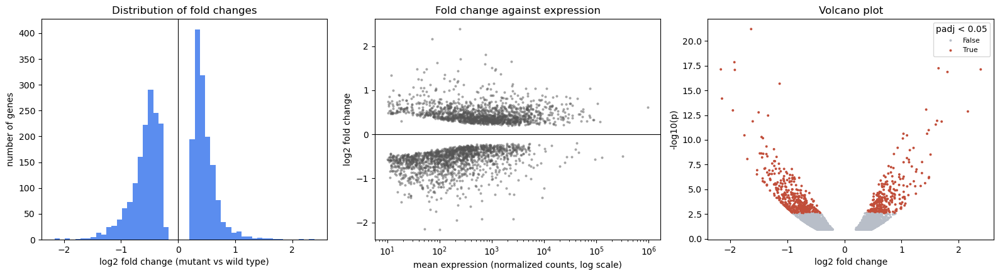
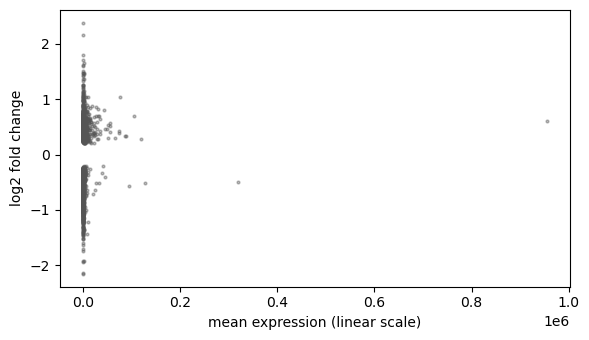
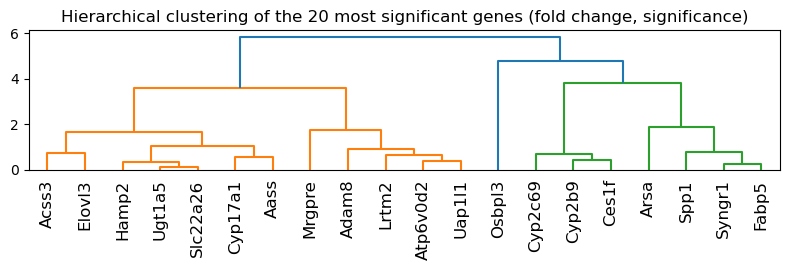
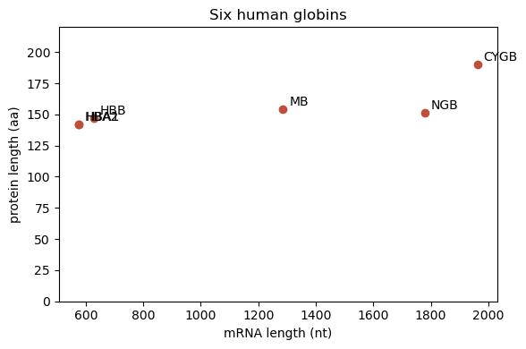

# Install the libraries Colab does not come with (does nothing if they are already installed)
import importlib.util, subprocess, sys
for module, package in [("Bio", "biopython")]:
if importlib.util.find_spec(module) is None:
subprocess.run([sys.executable, "-m", "pip", "install", "-q", package], check=True)Session 2 — Working like a computational biologist in Python
This notebook follows the Session 2 page section by section. Four ideas run through it: represent data with the right object, explore it before trusting any number, use existing tools, and get unstuck when code does not work. It uses one real dataset (mouse liver RNA-seq, Becares et al. 2019) and one real gene family (the human globins).
Run it on Colab, from VS Code or in the browser (see the Setup page). Sections 7 and 9 fetch records from NCBI, so they need an internet connection.
import numpy as np
import pandas as pd
import matplotlib.pyplot as plt
import seaborn as sns
from scipy import stats
import torch
import os
FIGS = "../figs" if os.path.isdir("../figs") else "."
print("pandas", pd.__version__, "| torch", torch.__version__)pandas 3.0.0 | torch 2.5.11. Scientific Python objects
The same three transcript lengths in a list, a NumPy array and a pandas DataFrame. Each object gives the operations that make sense for its kind of data.
lengths = [628, 577, 576] # HBB, HBA1, HBA2 mRNA lengths (nt)
print("list * 2: ", lengths * 2, " <- repeats the list")
arr = np.array(lengths)
print("array * 2: ", arr * 2, " mean:", round(arr.mean(), 2), " shape:", arr.shape)
print("boolean mask: ", arr > 600, "->", arr[arr > 600])
genes = pd.DataFrame({"gene": ["HBB", "HBA1", "HBA2"], "length": lengths})
print("\nDataFrame, rows with length > 600:")
print(genes[genes["length"] > 600])
print("\ncolumn types:\n", genes.dtypes)list * 2: [628, 577, 576, 628, 577, 576] <- repeats the list
array * 2: [1256 1154 1152] mean: 593.67 shape: (3,)
boolean mask: [ True False False] -> [628]
DataFrame, rows with length > 600:
gene length
0 HBB 628
column types:
gene str
length int64
dtype: objectLooking ahead: tensors and autograd
A PyTorch tensor is an array that can live on a GPU and remember how it was computed. .backward() applies the chain rule automatically: here it reproduces Session 1’s gradient practice problem and a tensor version of the dot product.
x0 = torch.tensor(1., requires_grad=True)
x1 = torch.tensor(2., requires_grad=True)
f = 3 * x0**2 + 2 * x0 * x1
f.backward()
print("gradient of 3*x0^2 + 2*x0*x1 at (1, 2):", (x0.grad.item(), x1.grad.item()), " (Session 1: (10, 2))")
a = torch.tensor([2., -1., 3.]); b = torch.tensor([1., 4., 0.])
print("dot product (2,-1,3).(1,4,0):", torch.dot(a, b).item(), " (Session 1: -2)")
# a tensor is shaped like an array: 4 DNA sequences x 8 positions, bases coded 0-3
seqs = torch.tensor([[0,1,2,3,0,1,2,3], [3,3,2,2,1,1,0,0], [1,0,1,0,2,2,3,3], [2,2,1,1,0,0,3,3]])
print("tensor shape:", tuple(seqs.shape), " first two sequences, first four bases:\n", seqs[:2, :4])gradient of 3*x0^2 + 2*x0*x1 at (1, 2): (10.0, 2.0) (Session 1: (10, 2))
dot product (2,-1,3).(1,4,0): -2.0 (Session 1: -2)
tensor shape: (4, 8) first two sequences, first four bases:
tensor([[0, 1, 2, 3],
[3, 3, 2, 2]])2. Exploring a biological dataset
Mouse liver RNA-seq, LXRα-S196A mutant against wild-type mice, both on a high-fat/high-cholesterol diet (Becares et al. 2019), analysed with DESeq2 and shared as example data by VolcaNoseR. First look at the table, before computing anything.
url = "https://raw.githubusercontent.com/JoachimGoedhart/VolcaNoseR/master/Becares-diffgenes_HFHC.csv"
df = pd.read_csv(url)
print("shape:", df.shape)
print("columns:", list(df.columns))
df.head()shape: (3001, 9)
columns: ['Gene', 'baseMean', 'log2_FoldChange', 'FC', 'lfcSE', 'stat', 'pvalue', 'padj', 'minus_log10_pvalue']| Gene | baseMean | log2_FoldChange | FC | lfcSE | stat | pvalue | padj | minus_log10_pvalue | |
|---|---|---|---|---|---|---|---|---|---|
| 0 | A1bg | 39.181235 | 1.251613 | 2.381075 | 0.298637 | 4.191087 | 0.000028 | 0.001705 | 4.555955 |
| 1 | A1cf | 1183.059641 | 0.744592 | 1.675500 | 0.191677 | 3.884628 | 0.000102 | 0.004557 | 3.989331 |
| 2 | Aadac | 3195.974860 | 0.687958 | 1.611002 | 0.156578 | 4.393708 | 0.000011 | 0.000817 | 4.954677 |
| 3 | Aadat | 1481.451788 | 0.603443 | 1.519338 | 0.181387 | 3.326831 | 0.000878 | 0.023207 | 3.056310 |
| 4 | Aaed1 | 432.155737 | 0.421805 | 1.339603 | 0.192979 | 2.185759 | 0.028833 | 0.234806 | 1.540107 |
df[["baseMean", "log2_FoldChange", "pvalue", "padj"]].describe().round(3)| baseMean | log2_FoldChange | pvalue | padj | |
|---|---|---|---|---|
| count | 3001.000 | 3001.000 | 3001.000 | 3001.000 |
| mean | 2217.760 | -0.071 | 0.039 | 0.226 |
| std | 19582.573 | 0.583 | 0.037 | 0.165 |
| min | 10.126 | -2.165 | 0.000 | 0.000 |
| 25% | 98.839 | -0.529 | 0.004 | 0.063 |
| 50% | 328.715 | -0.267 | 0.027 | 0.224 |
| 75% | 1115.481 | 0.410 | 0.069 | 0.382 |
| max | 954963.992 | 2.387 | 0.120 | 0.499 |
Look at the maxima. The largest p-value is 0.12 and the largest adjusted p-value 0.50. Genome-wide p-values range up to 1, so this file is a pre-filtered list of genes with \(p < 0.12\), not all genes.
print("largest p-value in the file:", round(df["pvalue"].max(), 3))
significant = df[df["padj"] < 0.05]
strong = df[(df["padj"] < 0.05) & (df["log2_FoldChange"].abs() > 1)]
print(f"padj < 0.05: {len(significant)} genes")
print(f"padj < 0.05 and |log2 FC| > 1: {len(strong)} genes "
f"({(strong['log2_FoldChange'] > 0).sum()} up, {(strong['log2_FoldChange'] < 0).sum()} down)")
print("\nmost significant genes:")
print(df.sort_values("padj").head(5)[["Gene", "log2_FoldChange", "padj"]].to_string(index=False))
top_up = significant.sort_values("log2_FoldChange", ascending=False).iloc[0]
print(f"\nlargest increase among significant genes: {top_up['Gene']} "
f"(log2 FC {top_up['log2_FoldChange']:.2f} = {2 ** top_up['log2_FoldChange']:.1f}-fold)")
print(f"\nmean expression: min {df['baseMean'].min():.0f}, median {df['baseMean'].median():.0f}, "
f"max {df['baseMean'].max():.0f} ({df.loc[df['baseMean'].idxmax(), 'Gene']})")largest p-value in the file: 0.12
padj < 0.05: 656 genes
padj < 0.05 and |log2 FC| > 1: 171 genes (46 up, 125 down)
most significant genes:
Gene log2_FoldChange padj
Osbpl3 -1.634422 8.070000e-18
Spp1 -1.927235 9.060000e-15
Syngr1 -2.164693 1.810000e-14
Cyp2b9 1.648193 1.810000e-14
Cyp2c69 2.387006 1.810000e-14
largest increase among significant genes: Cyp2c69 (log2 FC 2.39 = 5.2-fold)
mean expression: min 10, median 329, max 954964 (Alb)3. Seeing the data
Three questions, three plots: the distribution of fold changes (histogram), fold change against expression (scatter, log axis), and effect size against significance (volcano plot, with seaborn colouring by a column). This cell draws the page’s figure.
df["significant"] = df["padj"] < 0.05
fig, axes = plt.subplots(1, 3, figsize=(16, 4.5))
axes[0].hist(df["log2_FoldChange"], bins=50, color="#5b8def")
axes[0].axvline(0, color="k", lw=0.8)
axes[0].set_xlabel("log2 fold change (mutant vs wild type)"); axes[0].set_ylabel("number of genes")
axes[0].set_title("Distribution of fold changes")
axes[1].scatter(df["baseMean"], df["log2_FoldChange"], s=4, alpha=0.4, color="#555")
axes[1].set_xscale("log"); axes[1].axhline(0, color="k", lw=0.8)
axes[1].set_xlabel("mean expression (normalized counts, log scale)"); axes[1].set_ylabel("log2 fold change")
axes[1].set_title("Fold change against expression")
sns.scatterplot(data=df, x="log2_FoldChange", y="minus_log10_pvalue", hue="significant",
palette={True: "#c14e3a", False: "#b8bec8"}, s=8, linewidth=0, ax=axes[2])
axes[2].set_xlabel("log2 fold change"); axes[2].set_ylabel("-log10(p)")
axes[2].set_title("Volcano plot"); axes[2].legend(title="padj < 0.05", fontsize=8)
plt.tight_layout(); plt.savefig(f"{FIGS}/session02-explore.png", dpi=150, bbox_inches="tight"); plt.show()
Notice the empty band around zero in the left and middle panels: the pre-filtering again. Genes whose expression barely changed rarely reach \(p < 0.12\), so they are not in the file.
For comparison: the middle panel on a linear axis. Almost every gene is squeezed against the left edge by a few extremely highly expressed ones.
fig, ax = plt.subplots(figsize=(6, 3.5))
ax.scatter(df["baseMean"], df["log2_FoldChange"], s=4, alpha=0.4, color="#555")
ax.set_xlabel("mean expression (linear scale)"); ax.set_ylabel("log2 fold change")
plt.tight_layout(); plt.show()
4. Asking quantitative questions
Plot first, test second. The raw-scale Pearson correlation misses the relationship the log-scale plot shows; a test that fits the plot finds it.
abs_fc = df["log2_FoldChange"].abs()
r, p = stats.pearsonr(df["baseMean"], abs_fc)
print(f"Pearson, raw expression: r = {r:.2f}, p = {p:.2f} <- 'no relationship'?")
r, p = stats.pearsonr(np.log10(df["baseMean"]), abs_fc)
print(f"Pearson, log10 expression: r = {r:.2f}, p = {p:.0e}")
rho, p = stats.spearmanr(df["baseMean"], abs_fc)
print(f"Spearman (ranks): rho = {rho:.2f}, p = {p:.0e}")Pearson, raw expression: r = -0.01, p = 0.43 <- 'no relationship'?
Pearson, log10 expression: r = -0.30, p = 2e-64
Spearman (ranks): rho = -0.42, p = 2e-129Existing tools for standard questions
Session 1’s Welch t-test, the hierarchical clustering behind Session 4’s guide tree, and a scikit-learn model: each is one function call.
control = [5.1, 4.9, 5.3, 5.0]
treatment = [7.2, 6.8, 7.5, 7.0]
t, p = stats.ttest_ind(control, treatment, equal_var=False) # Welch's t-test
print(f"Welch t-test: t = {t:.1f}, p = {p:.4f}")
from scipy.cluster.hierarchy import linkage, dendrogram
top20 = df.sort_values("padj").head(20)
tree = linkage(top20[["log2_FoldChange", "minus_log10_pvalue"]], method="average")
fig, ax = plt.subplots(figsize=(8, 2.8))
dendrogram(tree, labels=top20["Gene"].tolist(), leaf_rotation=90, ax=ax)
ax.set_title("Hierarchical clustering of the 20 most significant genes (fold change, significance)")
plt.tight_layout(); plt.show()
from sklearn.linear_model import LinearRegression
model = LinearRegression().fit(np.log10(df[["baseMean"]]), abs_fc)
print(f"scikit-learn: |log2 FC| = {model.intercept_:.2f} - {abs(model.coef_[0]):.2f} * log10(expression)")Welch t-test: t = -11.9, p = 0.0001
scikit-learn: |log2 FC| = 0.78 - 0.10 * log10(expression)5. Biological objects
Seq knows biology; a SeqRecord adds what the database knows about the sequence.
from Bio.Seq import Seq
from Bio.SeqUtils import gc_fraction
hbb = Seq("ATGGTGCATCTGACTCCTGAGGAGAAGTCT") # first ten codons of HBB (NM_000518.5)
print("length: ", len(hbb))
print("GC fraction: ", gc_fraction(hbb))
print("reverse complement:", hbb.reverse_complement())
print("translated: ", hbb.translate())length: 30
GC fraction: 0.5
reverse complement: AGACTTCTCCTCAGGAGTCAGATGCACCAT
translated: MVHLTPEEKS6. Your own objects: classes
A class is a blueprint; each object made from it carries its own data (attributes) and the functions that act on that data (methods). __init__ runs once, when an object is created, and self is the object a method was called on.
from Bio.SeqUtils import molecular_weight
class Protein:
"""A protein: a name and an amino-acid sequence."""
def __init__(self, name, sequence):
self.name = name # attributes: the data each object carries
self.sequence = sequence
def length(self): # a method: a function that uses the object's own data
return len(self.sequence)
def composition(self, residues):
"""The fraction of the sequence made of the given residues."""
return sum(self.sequence.count(aa) for aa in residues) / self.length()
def weight(self):
"""Molecular weight in daltons, from Biopython."""
return molecular_weight(self.sequence, seq_type="protein")
def __len__(self): # a special method: makes len(protein) work
return self.length()
def __repr__(self): # ... and this one decides how the object is printed
return f"Protein({self.name!r}, {self.length()} aa)"
# human beta-globin (UniProt P68871)
beta = Protein("HBB", "MVHLTPEEKSAVTALWGKVNVDEVGGEALGRLLVVYPWTQRFFESFGDLSTPDAVMGNPKVKAHGKKVLGAFSDGLAHLDNLKGTFATLSELHCDKLHVDPENFRLLGNVLVCVLAHHFGKEFTPPVQAAYQKVVAGVANALAHKYH")
print(beta)
print("length: ", beta.length(), "| len():", len(beta))
print("hydrophobic AVLIMFWC:", round(beta.composition("AVLIMFWC"), 3))
print("molecular weight: ", round(beta.weight()), "Da")Protein('HBB', 147 aa)
length: 147 | len(): 147
hydrophobic AVLIMFWC: 0.442
molecular weight: 15998 DaInheritance. A subclass gets everything its parent class has and adds to it. Its __init__ first calls the parent’s with super().__init__(...), so that the parent’s attributes are set up too.
class Enzyme(Protein):
"""A protein that also has an EC number."""
def __init__(self, name, sequence, ec_number):
super().__init__(name, sequence) # let Protein set name and sequence
self.ec_number = ec_number
def __repr__(self):
return f"Enzyme({self.name!r}, EC {self.ec_number}, {self.length()} aa)"
# human lysozyme (UniProt P61626), the mature chain without its signal peptide
lyz = Enzyme("LYZ", "KVFERCELARTLKRLGMDGYRGISLANWMCLAKWESGYNTRATNYNAGDRSTDYGIFQINSRYWCNDGKTPGAVNACHLSCSALLQDNIADAVACAKRVVRDPQGIRAWVAWRNRCQNRDVRQYVQGCGV", "3.2.1.17")
print(lyz)
print("inherited method, weight():", round(lyz.weight()), "Da")
print("an Enzyme is also a Protein:", isinstance(lyz, Protein))Enzyme('LYZ', EC 3.2.1.17, 130 aa)
inherited method, weight(): 14701 Da
an Enzyme is also a Protein: TrueLooking ahead: a PyTorch model is a class
Session 8 writes neural networks in exactly this shape: a class that inherits from nn.Module, creates its layers as attributes in __init__, and describes the computation in forward. Calling the object, model(x), runs the special method __call__, which nn.Module defines to do some bookkeeping and then call forward.
import torch.nn as nn
class TinyNet(nn.Module):
def __init__(self):
super().__init__() # nn.Module sets itself up first
self.layer = nn.Linear(3, 1) # a layer is an attribute
def forward(self, x):
return self.layer(x)
torch.manual_seed(0)
model = TinyNet()
x = torch.ones(1, 3)
print(model)
print("model(x) :", model(x).item())
print("model.forward(x):", model.forward(x).item(), "(the same: model(x) calls forward)")
print("weights to learn:", sum(p.numel() for p in model.parameters()))TinyNet(
(layer): Linear(in_features=3, out_features=1, bias=True)
)
model(x) : -0.5946866273880005
model.forward(x): -0.5946866273880005 (the same: model(x) calls forward)
weights to learn: 47. Data coming from somewhere
Everything arrives through a file handle, opened with with so it is closed automatically. First NCBI (remote), then the same records written to and read back from a local FASTA file, and a compressed one.
from Bio import Entrez, SeqIO
Entrez.email = "your.name@student.su.se" # replace with your own address: NCBI requires one
with Entrez.efetch(db="nuccore", id="NM_000518.5", rettype="gb", retmode="text") as handle:
hbb_record = SeqIO.read(handle, "genbank")
print("id: ", hbb_record.id)
print("description:", hbb_record.description)
print("length: ", len(hbb_record.seq))
cds = [f for f in hbb_record.features if f.type == "CDS"][0]
print("CDS: ", cds.location, "->", cds.qualifiers["translation"][0][:20], "...")id: NM_000518.5
description: Homo sapiens hemoglobin subunit beta (HBB), mRNA
length: 628
CDS: [50:494](+) -> MVHLTPEEKSAVTALWGKVN ...import gzip
# write the record to a local FASTA file, and a gzip-compressed copy
with open("hbb.fasta", "w") as out:
SeqIO.write(hbb_record, out, "fasta")
with gzip.open("hbb.fasta.gz", "wt") as out:
SeqIO.write(hbb_record, out, "fasta")
# read them back: the code is the same, only the way the file is opened differs
with open("hbb.fasta") as handle:
local = SeqIO.read(handle, "fasta")
with gzip.open("hbb.fasta.gz", "rt") as handle:
compressed = SeqIO.read(handle, "fasta")
print("local FASTA: ", local.id, len(local.seq))
print("compressed FASTA:", compressed.id, len(compressed.seq), "| same sequence:", local.seq == compressed.seq)
for f in ["hbb.fasta", "hbb.fasta.gz"]:
os.remove(f) # keep the folder tidylocal FASTA: NM_000518.5 628
compressed FASTA: NM_000518.5 628 | same sequence: True8. When you don’t know how to do something
Three real failures, and how the routine read → inspect → documentation → AI → verify resolves each. The errors are caught with try/except so the notebook keeps running; normally you would just see the message.
# 1. KeyError: a column that doesn't exist
try:
df["log2FC"].mean()
except KeyError as e:
print("KeyError:", e)
print("inspect -> df.columns contains:", [c for c in df.columns if "log2" in c.lower()])
print("fixed:", round(df["log2_FoldChange"].mean(), 3))KeyError: 'log2FC'
inspect -> df.columns contains: ['log2_FoldChange']
fixed: -0.071# 2. ImportError: an outdated suggestion (old tutorials, and AI assistants trained on them)
import Bio
try:
from Bio.SeqUtils import GC
except ImportError as e:
print(f"ImportError (Biopython {Bio.__version__}):", e)
print("documentation -> the replacement is gc_fraction:", gc_fraction(hbb))ImportError (Biopython 1.86): cannot import name 'GC' from 'Bio.SeqUtils' (/home/arnee/miniforge3/envs/ekman-teaching/lib/python3.11/site-packages/Bio/SeqUtils/__init__.py)
documentation -> the replacement is gc_fraction: 0.5# 3. Code that runs but may be wrong: test your assumptions
assert df["pvalue"].between(0, 1).all(), "p-values must lie between 0 and 1"
assert not df["Gene"].duplicated().any(), "one row per gene"
assert len(hbb_record.seq) == 628, "HBB mRNA should be 628 nt"
# a check with a known answer: the provided -log10(p) column should match our own computation
assert np.allclose(-np.log10(df["pvalue"]), df["minus_log10_pvalue"], rtol=1e-3)
print("all assumptions hold")
# inspecting an unfamiliar object
print(type(hbb_record), "| attributes include:", [a for a in dir(hbb_record) if not a.startswith("_")][:8])all assumptions hold
<class 'Bio.SeqRecord.SeqRecord'> | attributes include: ['annotations', 'count', 'dbxrefs', 'description', 'features', 'format', 'id', 'islower']The notebook trap. Run the next two cells, then run the second one again several times without the first. The number keeps climbing, because counter lives in memory, not on the page. Restart and Run All resets it.
Before submitting or sharing a notebook: Restart Kernel → Run All.
counter = 0
print(counter)0counter += 1
print("counter is now:", counter)counter is now: 19. Mini challenge: a small analysis, start to finish
Fetch the six human globin mRNAs, represent them as a DataFrame, calculate how much of each is coding, plot protein length against mRNA length, and explain the result. (Try it yourself before reading the solution below.)
accessions = {"HBB": "NM_000518.5", "HBA1": "NM_000558.5", "HBA2": "NM_000517.6",
"MB": "NM_001382809.1", "NGB": "NM_021257.4", "CYGB": "NM_134268.5"}
# one request for all six records, rather than six requests in a loop
with Entrez.efetch(db="nuccore", id=",".join(accessions.values()), rettype="gb", retmode="text") as handle:
records = list(SeqIO.parse(handle, "genbank"))
rows = []
for gene, record in zip(accessions, records):
cds = [f for f in record.features if f.type == "CDS"][0]
protein = cds.qualifiers["translation"][0]
rows.append({"gene": gene, "accession": record.id, "mrna_length": len(record.seq),
"gc": round(gc_fraction(record.seq), 2), "protein_length": len(protein),
"untranslated": len(record.seq) - len(cds.extract(record.seq))})
globins = pd.DataFrame(rows)
globins["coding_fraction"] = (1 - globins["untranslated"] / globins["mrna_length"]).round(2)
assert list(globins["accession"]) == list(accessions.values()), "records came back in a different order"
globins| gene | accession | mrna_length | gc | protein_length | untranslated | coding_fraction | |
|---|---|---|---|---|---|---|---|
| 0 | HBB | NM_000518.5 | 628 | 0.51 | 147 | 184 | 0.71 |
| 1 | HBA1 | NM_000558.5 | 577 | 0.64 | 142 | 148 | 0.74 |
| 2 | HBA2 | NM_000517.6 | 576 | 0.64 | 142 | 147 | 0.74 |
| 3 | MB | NM_001382809.1 | 1286 | 0.55 | 154 | 821 | 0.36 |
| 4 | NGB | NM_021257.4 | 1778 | 0.62 | 151 | 1322 | 0.26 |
| 5 | CYGB | NM_134268.5 | 1962 | 0.62 | 190 | 1389 | 0.29 |
fig, ax = plt.subplots(figsize=(6, 4))
ax.scatter(globins["mrna_length"], globins["protein_length"], color="#c14e3a")
for _, row in globins.iterrows():
ax.annotate(row["gene"], (row["mrna_length"], row["protein_length"]), xytext=(5, 3), textcoords="offset points")
ax.set_xlabel("mRNA length (nt)"); ax.set_ylabel("protein length (aa)")
ax.set_ylim(0, 220); ax.set_title("Six human globins")
plt.tight_layout(); plt.show()
r, p = stats.pearsonr(globins["mrna_length"], globins["protein_length"])
print(f"Pearson r = {r:.2f}, p = {p:.2f} (n = {len(globins)})")
print(f"untranslated sequence: {globins['untranslated'].min()}-{globins['untranslated'].max()} nt")
Pearson r = 0.78, p = 0.07 (n = 6)
untranslated sequence: 147-1389 ntWhat we found. The proteins are all about the same size (142-190 amino acids, one globin fold each), but the mRNAs differ more than threefold; the difference is almost all untranslated sequence (UTRs). A transcript’s length says little about its protein. With only six genes, a correlation of \(r = 0.78\) has \(p = 0.07\): a strong-looking correlation from few points is weak evidence.
The lab continues from here.